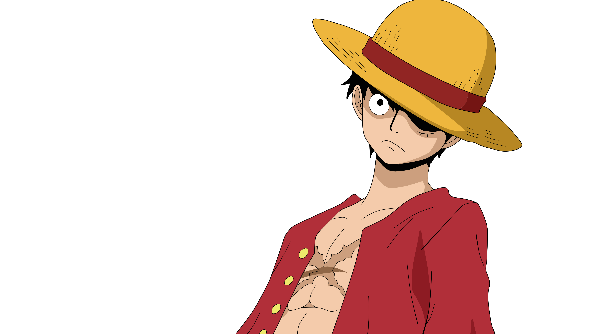
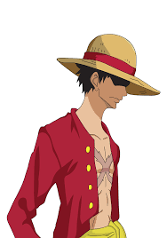
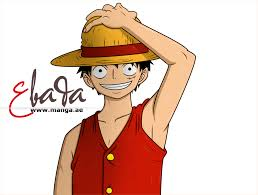
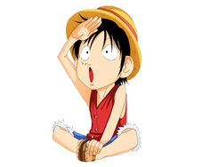
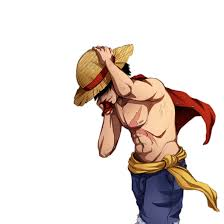
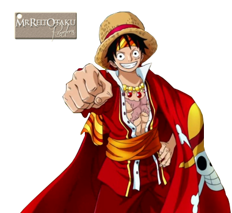
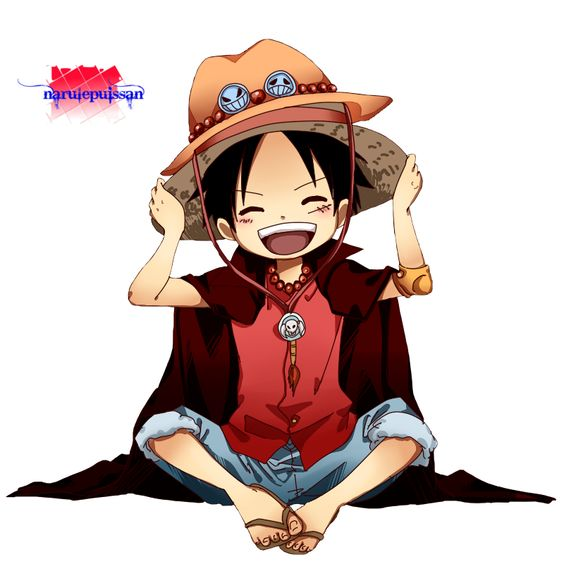
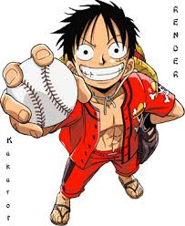

Monkey D. Luffy,[1] also known as "Straw Hat Luffy" and commonly as "Straw Hat",[4] is the main protagonist of the manga and anime, One Piece. He is the son of Monkey D. Dragon,[12] the grandson of Monkey D. Garp,[13] the adoptive brother of Portgas D. Ace and Sabo, and the foster son of Curly Dadan. Luffy is a pirate and his lifelong dream is to become the Pirate King by finding the legendary treasure left behind by the late Pirate King, Gol D. Roger.[14] He believes that being Pirate King means having the most freedom in the world.[15] He has eaten the Gomu Gomu no Mi, which gives the consumer's body the properties of rubber.[16] As the founder and captain of the Straw Hat Pirates, he is the first member of the crew, as well as one of its top three fighters.[17]
|  |  |  |  |
|  |  |  |  |